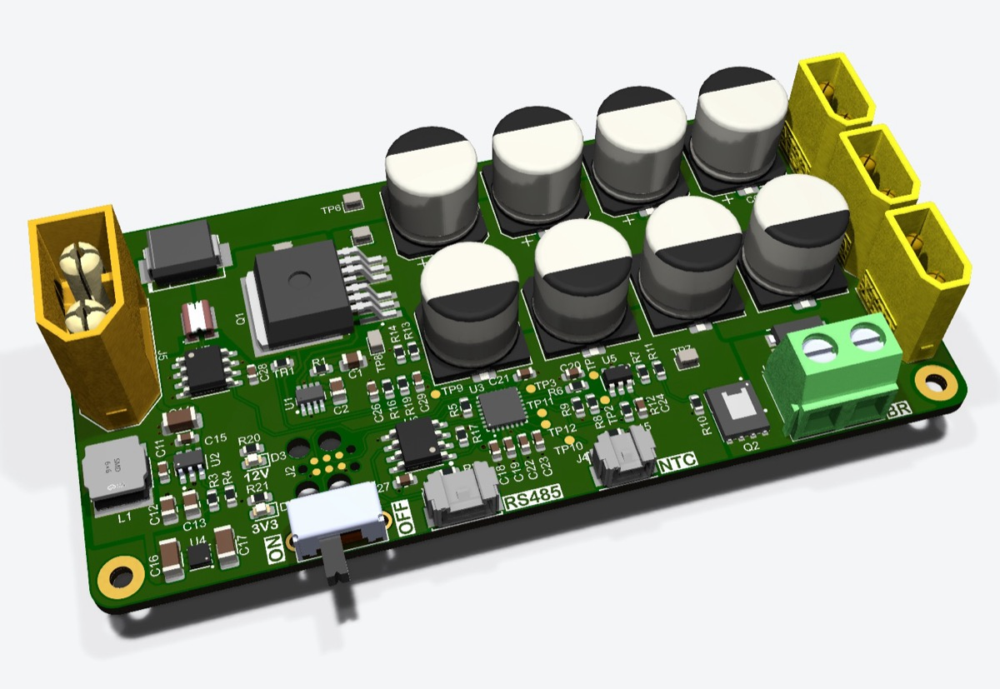
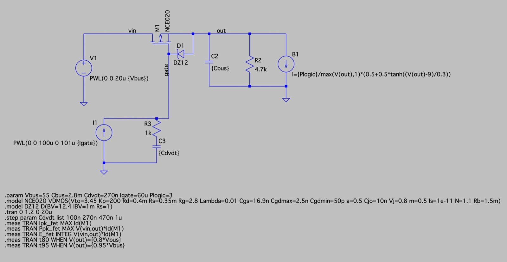
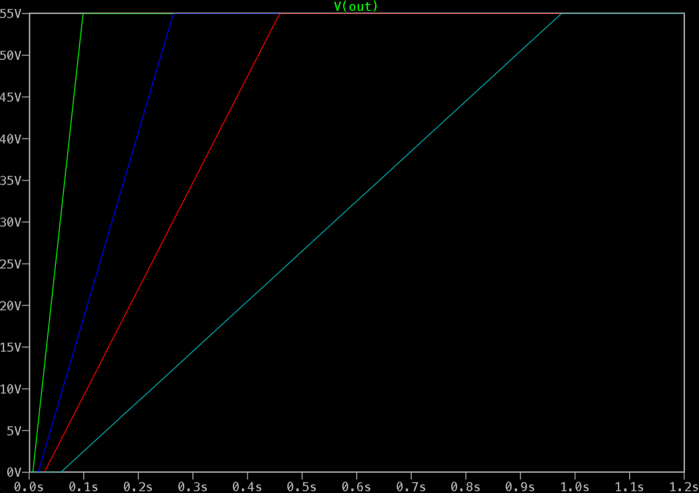
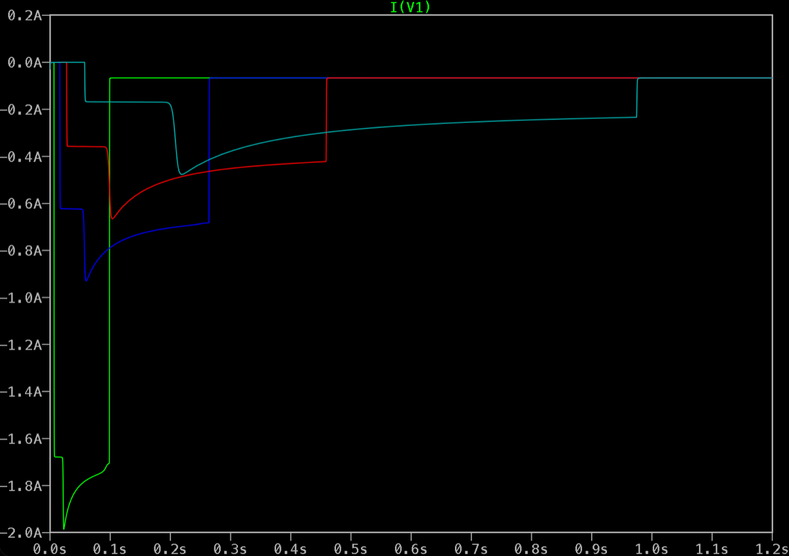
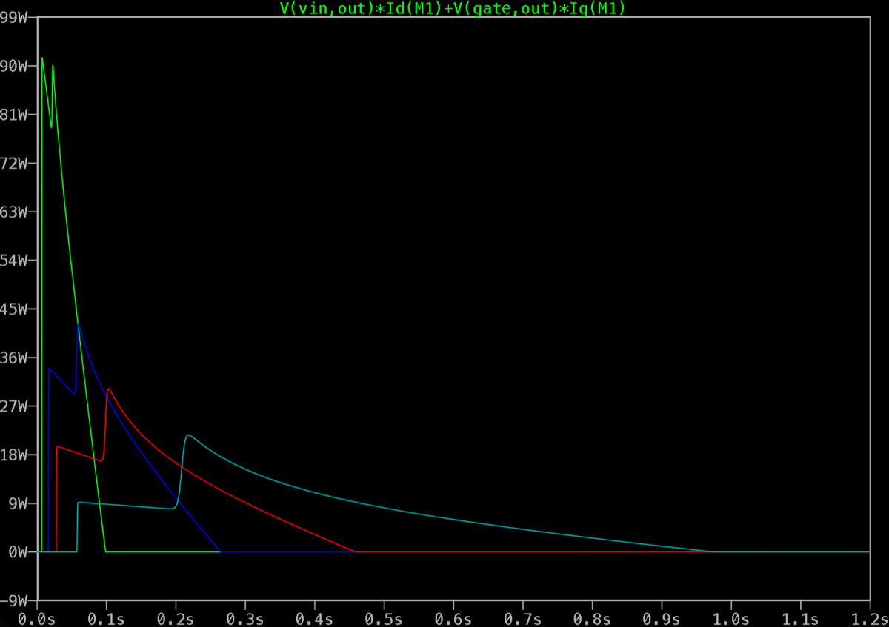

Overview
This project started off as a brake chopper for my FOC board to prevent it from destroying my power supply. It has now turned into a power distribution board capable of powering three boards, and I plan on using it in future robotics projects.

Design goals
- Handle 60 V / 30 A
- Measure bus voltage and current
- Include a brake chopper
Precharge circuitry
A high-side MOSFET limits inrush into the bus. The gate driver sources a constant ~60 µA into the gate, which has a capacitor (\(C_{dv/dt}\)) to ground, so the bus rises at a fixed rate of \(I_{\mathrm{gate}} / C_{dv/dt}\) regardless of bus voltage or load. During this ramp the MOSFET operates in its linear region with a high \(V_{DS}\), which would put a standard switching MOSFET outside its safe operating area, so I selected a MOSFET rated for linear-mode operation (wide SOA). The simulations below (55 V input, 2.8 mF bus capacitance, 3 W logic load turning on at 9 V) show the effect of \(C_{dv/dt}\). I chose 470 nF: peak inrush is ~0.67 A, the MOSFET peaks at ~32 W for a fraction of a second (~5.5 J total), and startup takes ~0.46 s.

Simulation results. Traces: 100 nF 270 nF 470 nF 1 µF



Result summary
| Trace | Cdvdt | Peak supply current | Peak MOSFET power | Charge time |
|---|---|---|---|---|
| Green | 100 nF | ~2.0 A | ~90 W | ~0.10 s |
| Blue | 270 nF | ~0.93 A | ~42 W | ~0.27 s |
| Red | 470 nF | ~0.67 A | ~32 W | ~0.46 s |
| Cyan | 1 µF | ~0.48 A | ~23 W | ~0.98 s |
Brake chopper circuitry
The brake chopper is based on a comparator. A divided-down copy of \(V_{\mathrm{BUS}}\) is fed into the non-inverting input, and a reference voltage generated by the MCU is fed into the inverting input. When \(V_{\mathrm{BUS}}\) exceeds the set voltage, the comparator output goes high and turns on the chopping MOSFET. This dumps the excess energy into the brake resistor, pulling the bus voltage back down. I added hysteresis to the comparator, so once the chopper turns on it stays on until the bus falls below a lower threshold. This prevents it from chattering around the set point. Below are my calculations for the divider and hysteresis resistors.
Threshold derivation
The comparator switches when \(V_+ = V_{\mathrm{REF}}\). KCL at \(V_+\):
Chop and release thresholds
Component selection
Target \(V_{\mathrm{HYS}} = 1.2\,\mathrm{V}\) with \(V_{CC} = 12\,\mathrm{V}\).
- Feedback ratio.
$$\frac{R_{\mathrm{top}}}{R_{\mathrm{fb}}} = \frac{1.2\,\mathrm{V}}{12\,\mathrm{V}} = 0.1 \;\Rightarrow\; R_{\mathrm{top}} = 100\,\mathrm{k\Omega},\;\; R_{\mathrm{fb}} = 1\,\mathrm{M\Omega}$$
- Divider ratio. For \(V_{\mathrm{CHOP}} = 36\,\mathrm{V}\) at mid-scale \(V_{\mathrm{REF}} = 1.65\,\mathrm{V}\):
$$\frac{36}{1.65} = 1 + \frac{100\,\mathrm{k\Omega}}{R_{\mathrm{bot}}} + 0.1 \;\Rightarrow\; \frac{100\,\mathrm{k\Omega}}{R_{\mathrm{bot}}} = 20.718 \;\Rightarrow\; R_{\mathrm{bot,ideal}} = 4.83\,\mathrm{k\Omega}$$
- Standard value. Choosing E24 \(R_{\mathrm{bot}} = 4.7\,\mathrm{k\Omega}\):
$$K = 1 + \frac{100\,\mathrm{k\Omega}}{4.7\,\mathrm{k\Omega}} + \frac{100\,\mathrm{k\Omega}}{1\,\mathrm{M\Omega}} = 1 + 21.277 + 0.1 = \mathbf{22.377}$$
Design equations
Reference voltage
Since the MCU I chose doesn’t have a DAC, I generate a PWM signal using a timer and filter it with a first-order low-pass filter. I chose R = 10 kΩ and C = 4.7 µF. This gives a cutoff frequency of 3.39 Hz and a time constant of 47 ms (about 0.24 s to settle), which balances settling time against ripple on the threshold.
Ripple on the chopping voltage. With a PWM period much shorter than \(\tau\), the peak-to-peak ripple on \(V_{\mathrm{REF}}\) at duty \(D\) is approximately
and the divider multiplies it by \(K\) at the bus:
Calibration
Since I only have 1% resistors, the threshold can be off by about ±1.6 V. To fix this, I plan on calibrating the chopper threshold with a multimeter and storing the calibration values in code. Here is how the calibration works:
- Set CCR = 2400 (ARR = 2399, so 100% duty and \(V_{\mathrm{REF}} = V_{DD}\)). This puts \(V_{\mathrm{CHOP}}\) at about 74 V, so the chopper stays off during calibration.
- Apply a known bus voltage \(V_{\mathrm{cal}}\), for example 48 V, read from the bench supply or a DMM.
- Average 16–64 ADC samples of \(V_+\) to get \(\mathrm{code_{cal}}\).
- Store \(V_{\mathrm{cal}}\) and \(\mathrm{code_{cal}}\) in flash.
Then set the threshold with:
Because the ADC reads the same node the comparator sees, and both the ADC and the PWM reference \(V_{DD}\), the divider tolerance and \(V_{DD}\) cancel out of this formula.
Voltage and current measurement
To measure the bus voltage, I use a separate voltage divider to step down \(V_{\mathrm{BUS}}\) so it can be fed into the STM32 ADC.
For the current measurement, I use a 2 mΩ shunt resistor with an INA240A1D current-sense amplifier, whose output is read by the STM32 ADC.
Verification
Hardware verification is in progress. I will add the results here once I verify them on the board.